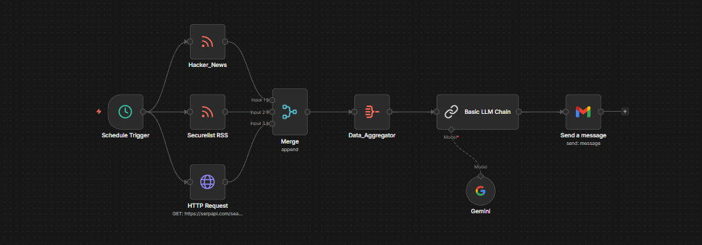

> cat portfolio/ai-newsletter.md
AI-Powered Cybersecurity Newsletter Automation
n8n
RSS
Gmail
Gemini AI
Overview
This project automates the aggregation and curation of cybersecurity news. Instead of manually checking various advisory sources, the system listens to multiple RSS feeds, extracts the content, and leverages Gemini AI to write concise summaries. Finally, the automated system compiles the summaries and sends them out as a daily email report.
What It Does
- > Fetches the latest cyber news from curated RSS feeds automatically.
- > Summarizes lengthy articles using Gemini AI into digestible insights.
- > Sends a daily consolidated email report via Gmail API.
Screenshots

Role
Co-developed
Impact
Reduces daily news consumption time by 80% while ensuring critical advisories are never missed.